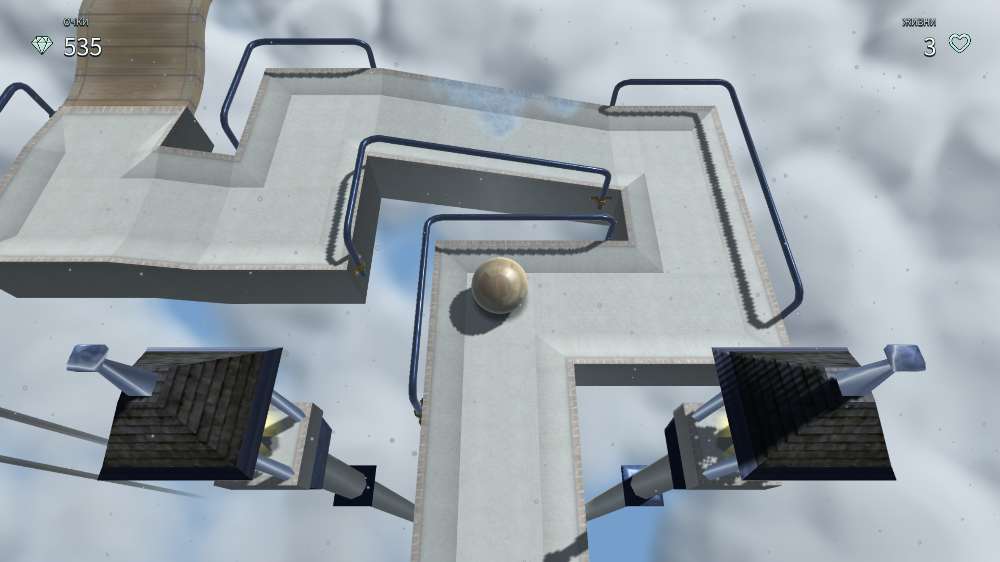

Wood
Warm grain, readable seams, and the familiar all-round ball.

A little courage. A little balance.
A wooden ball, a narrow path, and a world suspended in the clouds. Come back to a feeling you remember.
Rediscover Ballance ↓Reballance 1.0.0-dev.11 · actual gameplay
01 — The beginning
Ballance, created by Cyparade, made a world out of balance, momentum and height. Its stone paths, wooden bridges and steel rails ask for patience as much as precision.
Wood, stone and paper are more than appearances. Each ball has a different weight and a different role. Finding the right material is part of finding the way.
Reballance is built on iwonz/ballance, the maintained fork with Russian localization and multiplatform support. That fork builds on the open-source Unity recreation by Happy Dreamfish (imengyu), inspired by Cyparade’s original game.
The familiar experience
The classic Unity recreation: familiar routes, menus, tutorial and mechanics. Version 1.0.11 is preserved as a permanent starting point, maintained independently in the iwonz/ballance repository.
This is the classic Unity reconstruction, not the original commercial Cyparade executable.
Play BallanceExplore the preserved source ↗
02 — Reballance
Reballance development brings tactile materials, clearer menus and carefully authored weather to the suspended tracks. Your classic edition stays independent.
Reballance in developmentWarm grain, readable seams, and the familiar all-round ball.

Dense mineral detail, worn edges, and a reassuring sense of weight.

Soft fibres and folds. Light enough to find a different way forward.
Texture studies for Reballance · work in progress
Seven ways to see the sky
Standard is the default. Weather presets are separate from graphics quality. Place names describe an artistic theme, with the tracks still floating in the sky.

03 — Make yourself at home
Reballance targets Web, Windows, Linux, macOS and Android. Downloads accompany each verified release.
Download Reballance ↗Source code & development ↗Each edition has its own settings and progress. Your saves are not transferred automatically.